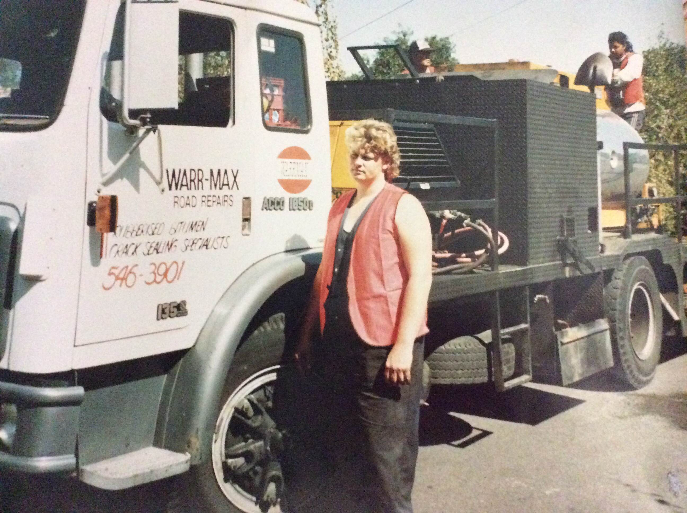
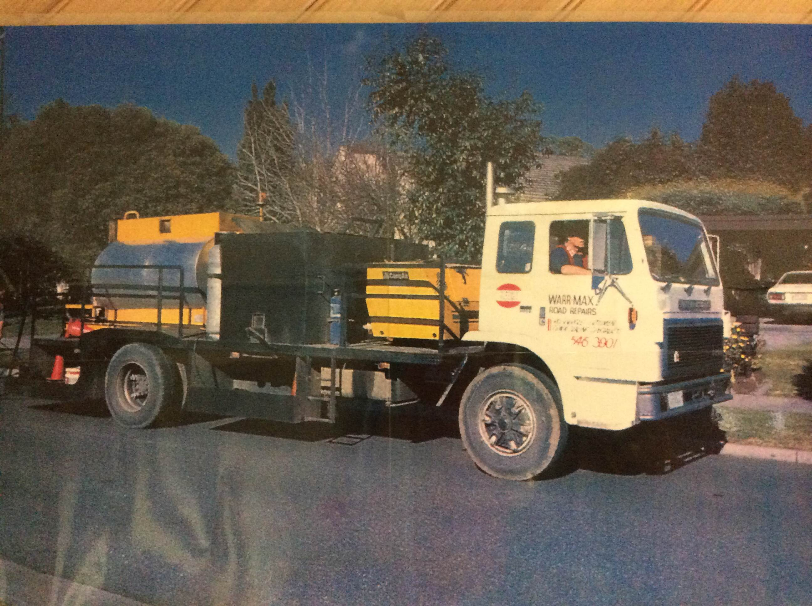
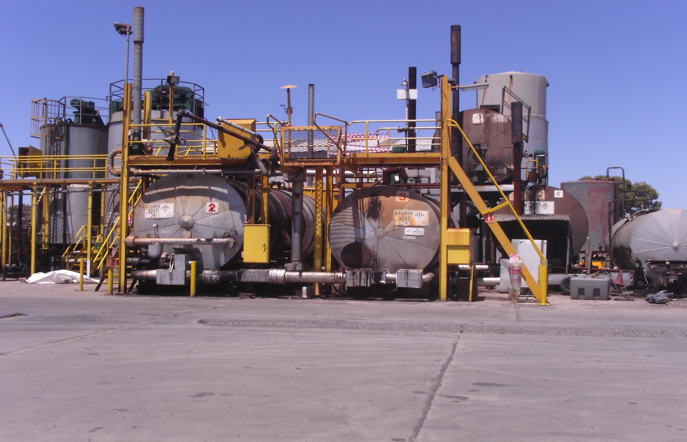
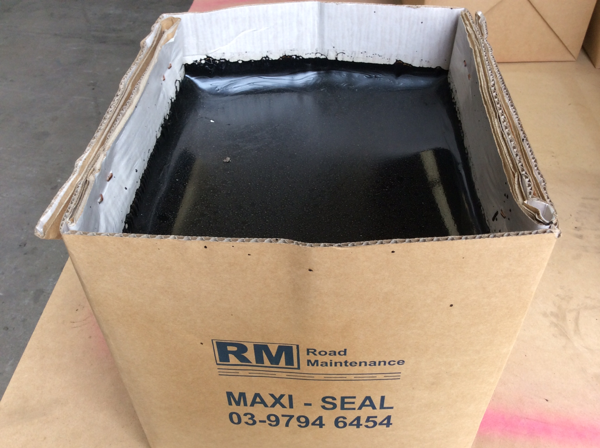
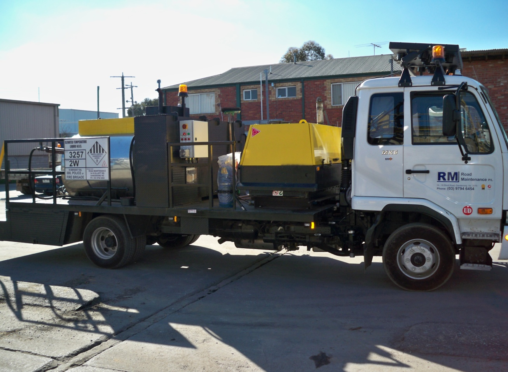
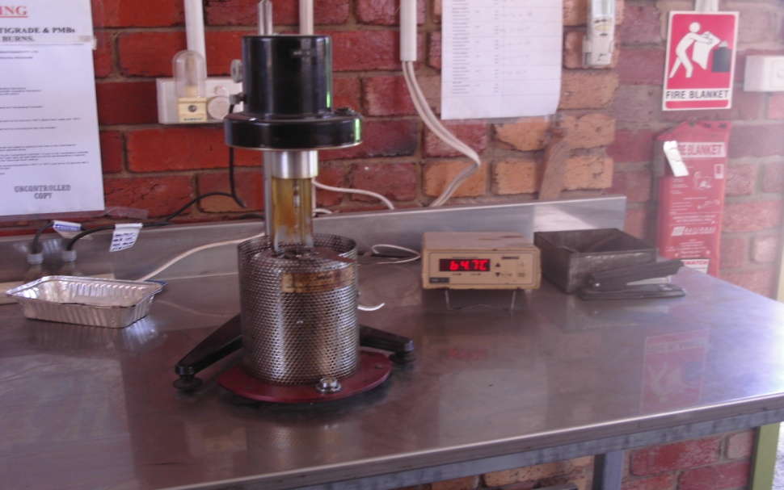

Crack-Sealing History
Road Maintenance Pty Ltd – The Original Australian Crack Sealer
Road Maintenance Pty Ltd is a name synonymous with road crack-sealing globally, the company launched the original crack-sealing process in Australia and we believe we were probably one of the first worldwide. The scientific innovation of bitumen based crack sealing in Australia dates back to 1974. Since 1974 Road Maintenance (It was known as Warrmax back then) has continually innovated the crack sealing process and improved the bitumen based sealant to ensure that all products and all of the assets we use are Australian made. In this way we ensure that we employ Australian staff to make the sealant (Called Maxiseal), to design and build the tankers, to run the impressive NATA laboratory and to maintain the high quality ISO9001 accreditation.
Since 1974 Road Maintenance has employed over 800 people in its crack sealing operation and continues to adopt the policy of using only Australian owned, Australian designed and Australian made products and assets. We believe we make crack sealant product and crack sealing engineering equal to or better than the quality that can be imported. The history below describes why we have adopted this ideal.
We also continue to be unique in that we employ qualified bitumen technologists (Scientists) and mechanical engineers at our organisation to ensure that we focus on innovation, product improvement and safe process improvement of crack sealing operations.
History (1970’s) – the start
In 1974 Road Maintenance Pty Ltd (then known as Warrmax)was awarded a project to upgrade a concrete road pavement on Beach Road (between Charman Road and Warrigal road) by overlaying it with two layers of hot-mix asphalt. The concrete pavement however had large cracks at the slab joints which were opening up quickly; they were measured at about 25mm wide at the start of the job. The slabs were also independently moving under traffic and this needed to be stopped without removal of the slab. Max Fitzgerald (owner of Road Maintenance) worked with the Australian road Research Board (ARRB) for a period of about 2 months to come up with a potential solution for trial, which was a direct pour of a hot recycled-rubber modified bitumen product that consisted scrap rubber digested into Class 170 bitumen roughly equal to 25 parts rubber. The crack-sealing trial was undertaken in spring 1974 with the product made in 20 litre gas heated metal kettles on a trailer parked on the side of the road and then hand poured from large metal jugs into the cracks with the tin filled from a sample port on the 20 litre heated tank. The product worked well but the application process was slow, messy, slow curing, the rubber was poorly digested and thus the hand based process needed improvement. As with all gas heating (we still cannot believe that companies gas heat crack-sealants even in 2014) the crack-sealant became overcooked and the heating was noisy and on fire-ban days just plain dangerous. Prior to the application of the 25 parts rubber the cracks on Beach Road were blown clean with compressed air and difficult debris was removed prior to the pour by also being chipped out, this style of pre-preparation remains the basis of preparation until today. The job was declared a success by VicRoads and the ARRB and information on the process was quickly spread amongst council engineers.
12 months later in August 1975 a pavement repair job was advertised for a Class 170 re-sheet of a section Middleborough road near the Burwood highway intersection. The road was badly cracked and the participants in the project were worried about the possibility of significant crack propagation through the new seal. Road Maintenance was asked to consult as a result of the success of the 1974 crack-seal project and we recommended for the first time the use of bitumen based crack sealing on an asphalt pavement. The recommendation was well received and the crack sealing was applied as 25 parts rubber modified C170 bitumen, hand poured at 200°C. The final solution was very slow but it worked so well that word got around Victoria that crack sealing prior to application of spray seal or hot mix would greatly delay or even prevent crack propagation and thus save money and add years to pavement life.
Monash Council became aware of the new technology developed by Road Maintenance Pty Ltd and in late 1975-1976 a job was awarded to Road Maintenance to crack-seal the roads around the Waverley shopping centre to help delay re-sheeting for roads that were only slightly damaged. The project was driven partially by temporary budget difficulties but Victorian engineers were curious to see if crack- sealing of minor damaged roads delayed expensive overlays. The job worked so well that a 20 year crack-sealing program within the shire was awarded to Road Maintenance Pty Ltd and over the next 2 years many Melbourne councils and some regional council followed suit. Crack-Sealing was now truly borne in Victoria in the years 1976-78 as an effective road maintenance process. We were informed at that time that it was still a new process not yet conducted anywhere in Australia.
There were however significant issues that needed to be resolved. Firstly the product was hand poured slowly from a hot metal jug; secondly on hot days the curing time for 25 parts rubber was up to half an hour before the road could be trafficked, mixing was done in kettles on the side of the road or stationed on small trailers and lastly we recognised that gas heating was not an optimum rubber digestion process. For safety and productivity reasons we concentrated on designing future development that would remove the small metal kettles and the hand pouring operation.
1980’s
After many truck based design trials between 1977 – 1979, in 1980 a gas fired crack-sealing truck with a 800 litre gas heated tank (capable of mild digestion of rubber into C170 Bitumen), with a self-contained air compressor and an area for signs and implements was designed and built in Victoria, the truck was 3 years in the making and was dedicated to the safe and more rapid application of hot sealant to road cracks. The truck was fitted with accurate temperature control set up in the drivers cabin, it, had an insulated pipe and a hand lance for ease of operation and was designed with an impeller so that the crack-sealant could be mixed inside the tanker prior to use. The product was pumped from the tank through the flexible pipe into the hand lance and the final flow rate could be manually controlled by a valve at the base of the lance. The product exited from the lance through a special applicator onto the crack in the road at a distance of about 1.5 meters from the operator. A picture of our first truck built in 1980 and our second truck built in 1981 is shown below. True to our philosophy they technology was Australian designed and Australian owned. What was truly eye opening for us was that our daily productivity lifted from 800 linear metres per day to 4,000 linear metres per day and only two men were required if traffic was minor.

Figure-1 the first Crack-Sealing Truck. Picture- circa 1980. Note that product is being prepared in the tanker prior to leaving for the day’s work.

Fig-2. Our second crack-sealing truck in operation circa 1981. Showing application on a job via hand lance.
From 1981 onwards crack sealing was no longer hand poured, truck application was the safer and more efficient method and by 1982 Road Maintenance had a fleet of 6 trucks crack-sealing roads throughout Australia.
In 1983 Road Maintenance Pty Ltd was invited by the organisers of a global civil contractor’s conference to present and demonstrate the new process of hot crack-sealing of bitumen roads. The conference was held in Germany and was attended by all of the world renowned road contractors. A technical presentation was given include a video and great interest was initiated. We were informed by the organisers of the conference that the 1974 job at Beach road was very close to being the first official road crack-sealing job worldwide and that the truck mounted compressors and bitumen tank with hand- lance were revolutionary to improved safe and high productivity road crack-sealing processes.
Meanwhile in the early 1980’s it had been noted by Road Maintenance staff that on days where the ambient temperature exceeded 30°C (Approximate pavement temperature above 55°C) that the crack sealant remained soft and pliable until the end of the day. This led to the possibility of it being removed under traffic on extremely hot days when pavement temperatures exceeded 60°C.
Product innovation based upon a scientific understanding of bitumen behaviour, scrap rubber digestion and polymer modification was required to overcome this issue and soon a solution was found. The first solution incorporated was the use of Class 320 Bitumen in place of Class 170 bitumen to increase the hardness of the product. This new process was trialled in 1985, the product was found to be harder and better performing in the Australian summer and the new formula was adopted across the board in 1986. Later in 1987 we began to incorporate other additives, such as polymer, fibres, chemical tackifiers and bitumen hardeners etc to the crack-sealant. Some of these additives significantly increased the softening point of the crack-sealant and helped speed up the set time. In fact the traffic time came down to about 1 minute maximum for most of the year and now for the first time traffic could drive over the crack-sealant immediately after application, it was no longer held up and irate drivers became a thing of the past. A new technology using specially digested crumb rubber combined with a carefully chosen selection of elastomeric polymers (as used in PMB’s or Polymer Modified Bitumens) was born and we initiated this technology in the late 1980’s to further improve the performance of our Australian made and Australian designed crack-sealant.
1990’s
It had become clear from the development work we did in the late 1980’s that rubber digestion influenced the quality of the crack-sealing product and that blending rubber products on the side of the road or in the tanker was far from ideal. This method provides for much poorer rubber digestion and dispersion into bitumen, poorer temperature control and presents significant safety challenges upon application through the lance. Road Maintenance had the option of buying crack-sealants from other suppliers within Australia or even importing crack-sealants. Instead we decided to gain more control over our operations and we designed and built a fixed rubber and polymer modified Bitumen plant at our premises located at Dandenong in Victoria. The plant was built and commissioned in 1994-1995 for multiple millions of dollars but the investment as worth it. Immediately we noted that higher quality crack-sealing products were being produced due to improved rubber digestion and that we could make the sealant in larger batch sizes with greater consistency (normal batch size was now 15,000 litres, it used to be 800 litres). In 1997, Road Maintenance decided that it was necessary to incorporate an advanced bitumen laboratory to allow for ongoing product innovation and for batch testing. A fully equipped laboratory was built and NATA accreditation was obtained for Bitumen and rubber testing in the 1990’s, it was a commitment worth many hundreds of thousands of dollars but again an investment we believed was worthwhile and one we noted other crack-sealers avoided to proceed with. This commitment displayed clearly the focus of Road Maintenance on innovation, troubleshooting and high quality testing in the area of crack-sealing. Our commitment to quality can be summarised by our pride in the well run NATA accredited crack-sealing laboratory, unique amongst crack-sealers in Australia.

Fig-3, The Rubber and polymer modified bitumen plant at our Dandenong premises. Crack-sealant is made regularly at the plant; none of our competitors have invested to this extent.
It was also noted largely throughout the 1990’s that a significant problem lay with the practical handling and storage of the crack-sealant product, a new idea was required so that it could be charged to the tanker and melted with ease by a single individual or stored over winter if required but the real advantage was the need for ease of transport around Australia. Mr Fitzgerald came up with an innovative solution, where he helped design a heat resistant special-wax coated 24 litre cardboard box (to hold 22litres of product). The specific coating had to be extremely low in surface tension, non- adhering to crack-sealant product and heat resistant to 200°C (filling temperature). This was new technology even to company’s experienced in this area and they were momentarily taken back by the challenge of having to withstand 200C but not stick to bitumen crack-sealant. We persisted and the box along with the coating was invented, designed and trialled in 1997-2000. It succeeded well and a patent was taken out a few years later by Road Maintenance Pty Ltd to protect the innovation. The special hot bitumen resistant and non-adhesive cardboard box is still being used today. The 2003 patent abstract is status shown below for patent AU2003100641, some of our competitors have copied this technology but we are proud that we innovated it; for this is part of our culture, not to copy blindly but to innovate.


Fitzgerald, Max currently has 1 patent in Australia associated with it. The filing date for this patent is 6/08/2003. The specific patent currently associated with this applicant is:
- Patent Number – AU2003100641
- Title – Maxiseal box
- Type – Innovation
- Filing Date – 2003-08-06


In 1995 Road Maintenance undertook an research and development program to design and formulate skid resistance properties into its bitumen based crack-sealants. We recognised that this was an important safety and public welfare issue that needed to be considered as part of day to day road crack-sealing. Truly innovative crack-sealing companies ensure that this property is always under consideration. We were aware that to overcome skid resistance issues companies around the world were “blinding” the fresh crack-sealant with fine aggregate, however we had wondered at this stage if the skid resistance requirements could be innovated into the product itself.
By 1999 we were had improved our “Maxiseal” product range and had made a generational change in the skid resistance properties of the bitumen based crack-sealant. Skid resistance remained into the 2000′s as an important issue for RM.
2000’s
In about 2000-2001 it became very clear that gas based heating (and in some cases diesel based) of rubberised bitumen in a tanker has a number of negative issues. The heating through a gas tube causes significant localised overheating and substantial carbonisation of the sealant results. The quality of the sealant decreases measurably upon storage after 12 hours when a gas burner (or diesel) is used and the possibility of a fire or safety incident is a possibility. On total fire-ban days gas flames were not allowed and at night gas burners were slowly being banned from residential areas due to the loud noise thus significantly hindering our crack-sealing operation. We found that we were losing significant amount of heating time during travel to and from worksites and the 1990’s gas and diesel burners had some safety and reliability issues there was only one solution – do not copy as others would but innovate using Australian technology. As a result Road Maintenance developed a stand-alone safe oil heating system for a crack-sealing truck, doing away with gas tube and diesel burners for good. Remember we designed and trialled this technology in 2000-2002.
In 2002 we built and ran the very first hot-oil heated crack-sealing truck and all of our trucks converted to hot oil heating by 2005. Our competitors to this day run gas flame heated trucks which are notoriously unsafe during total fire-ban days. Our specially designed internal oil heated trucks are Victorian Government Work-safe approved to operate on these days this level of safety design in crack- sealing is unique to get to the point of obtaining Work-safe certification.
With the oil heated trucks we found that bitumen carbonisation almost disappeared and overheating was no longer possible. The quality of the crack-sealing product improved substantially and it is far better than the quality of product stored in gas fired tankers, in fact the product quality remains unchanged in oil heated tankers after 14 days storage at 195°C. We also found that workers safety (the number of reported minor burns reduced to zero) was substantially improved which is another reason that Work-safe approved these trucks so quickly, our tankers still proudly carry this approval today. But there was another advantage with the oil heated trucks, we were able to heat while we drove to site and so we arrived with product at the right temperature, there was no more wastage of 1-2 hours in preheat. We found that our crack-sealing productivity lifted from 4,000 linear metres per day to 6,000 linear metres per day for a 2 man crew. Still until today those companies with gas burners charge customers for the pre-heating, we see this as a waste of money and our philosophy is that you should heat safely while you drive and arrive at the customer’s location on temperature and on time.
In 2004 a new and better laboratory was built and the extent of the NATA accreditation was widened to incorporate more testing and better quality control.
In 2004 skid resistance testing (SCRIM) by the South Australian department of Transport showed that Maxiseal gave the best skid resistance result of all three rubberised bitumen crack-sealants trialled. It was the only product that met the governments SCRIM requirements which is a remarkable result and indicates the safety of road crack-sealing with Maxiseal.
In the summary of the skid resistance trial the performance of Maxi-seal was exemplary and the letter from the trial managers stated the following “The blinding of the Road Maintenance crack-sealant with aggregate is not required”. For us we were happy that our investment into 5 years of ground breaking and intensive research had finally paid off. We could have copied others or have imported materials, but because of our culture at Road Maintenance P/L it was more important that we developed the answers and learnt from them. The Skid resistance letter of approval is attached here
In 2004 it became clear that on days of extreme weather (ambient air temperature above 38°C and up to 46°C) the crack sealant would cure in 10 minutes instead of our internal aim of 2-5 minutes. The measured pavement temperature on one such day was 75°C and we concluded that for Australian conditions we needed to raise the Ring and Ball softening Point of the binder to a level well above 100°C. The product was then further refined and a softening point of above 105°C minimum was adopted after much scientific investigation and was found to work well in the field. This focus on optimising for Australian conditions displays our commitment to the Australian industry. Works performed at Mt Hotham in 2004 showed that the same high softening point product performed well at ambient air temperatures of 1°C without any loss in performance.
In 2006 we launched a program to improve the elasticity of the crack-sealant to allow it to expand and contract even more with the movement in the pavement due to weather, sub-base movement factors or early traffic induced fatigue. The reason for this was to increase the expected lifetime of the hot bitumen based sealant so that minimum a period of 7 years could be obtained for most works. A new technology was developed and the sealant (Maxiseal) was improved again in 2007 to allow it to be “very elastic” in nature and also extremely adhesive to the walls of the crack in the pavement.
We are currently refining improvements to the fracture temperature of the sealant to ensure that it is significantly less than -10°C, improved application of the sealant for long term adhesion to concrete footpaths and cement floors, the effect of a widening array of available high performance additives to obtain non-newtonian (shear thinning and thixotropic profiles) viscosity profiles at high temperatures using only well known adhesive agents and finally truck and tanker improvements to help further improve worker safety.
However one of the main areas of focus through-out the 2000’s has been the adoption of improved and pre-planned traffic control during the application of crack-sealing. Preplanning with customers, including at least one safety drive through of the roads to be sealed along with accurate crack mapping for the customer and then application of that knowledge to an approved Traffic Management plan (TMP) and packaging of suitable signage is an important process. We utilise photographic evidence and satellite imagery to optimise our traffic plans.
A toolbox talk with the crews (Both the crack-sealing and traffic control crews) prior to each day’s work is a must so that they understand all of the possible risks and understand how to mitigate them. We have made an internal decision throughout the 2000’s to put the safety of our workers and the public first and foremost always, on many occasions this may mean that we apply traffic control where others do not or that we suggest night-works as a strong possibility, our work ethics demand that we do this. It is not acceptable to take any safety risk with our workers and with the public no matter how small with traffic moving around a moving worksite. If we cannot do it safely during the day then we will do it at night or on the weekend.
In mid 2014 we invented an environmentally friendly bitumen crack-sealant called Maxiseal Green. It is a unique blend of recycled crumb rubber and recycled computer plastic. The first job was on the Western Highway –Deer Park bypass overpass located in Western Melbourne. This is a road with extremely high traffic (more than 10,000 vehicles per lane per day) and the sealant was applied at night with ambient temperatures of 1 C. It was applied easily, it filled the cracks and adhered strongly with a terrific elastic nature and was perfect when applied as an over-band. The performance to date has been outstanding, so if you want an environmentally friendly crack-sealant we can do this as well. We will never stop innovating with road crack-sealing so as you watch this page we will add more of our developments to the bottom of it.

Fig-3, hot oil heated crack-sealing truck using electrical storage only (no diesel or gas required). Picture Circa 2010 Small work-safe badge can just be seen on the door.
The history of crack-sealing is the history of Road Maintenance Pty Ltd (previously Warrmax). So, if you require advice or assistance in the area of cracks sealing of roads, pavements, car-parks or footpaths please do not hesitate to contact us for we have 40 years of experience and using this experience we feel sure that we can help.

Fig-4, Our crack-sealing scientist develops better crack-sealants while at our NATA approved laboratory. Below a special viscometer at our laboratory is being used to optimise the thickness of our crack-sealant at high pavement temperatures.